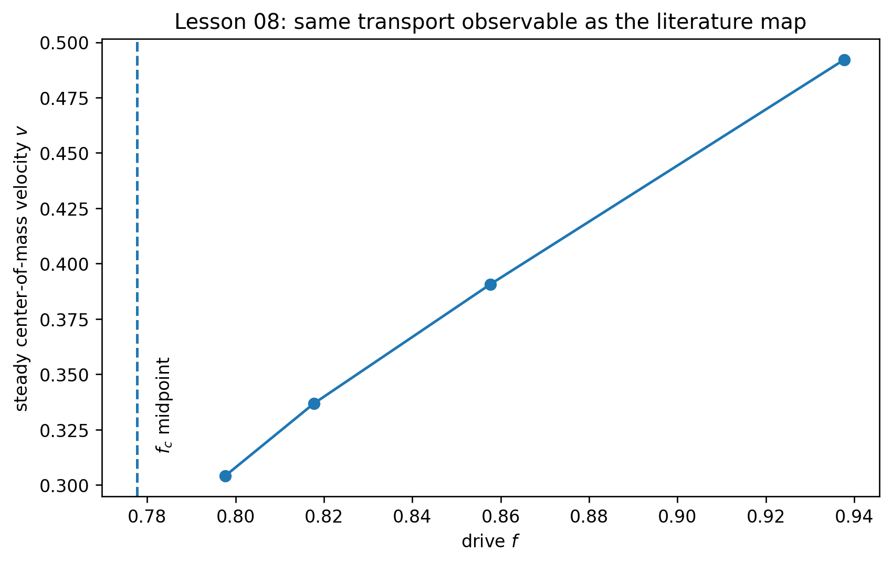

Learning Sliding Ferroelectricity / Reproduction Lab / Lesson 08
Paper2-orientedsource ↔ estimator mapping
论文画的是 v–f，我们这一课也只测 v–f
旧版把一张模糊的“velocity–force”图和四宫格结果摆在一起，却没有说明同轴关系。现在先用论文 regime map 定义 observable，再把我们自己的 steady v(f) 单独画成同样的横纵变量，最后才放 estimator QA。
本课和论文第一次用的是同一个 transport observable：纵轴都是 wall/interface 的 center-of-mass velocity v，横轴都是 drive f。论文图给出整个 regime map；我们的图只验证一个有限 disorder sample 在 f>fc 时能否可靠测到 steady v(f)。
0 · 论文总地图：v–f 轴上到底有哪些 regime？

论文量
steady velocity v versus drive f。
本课量
同样是 steady COM velocity v versus f。
差别
论文是普适 regime map；本课只是 L=32、单 realization 的 estimator validation。
1 · 先把自己的 v(f) 单独画出来

center-of-mass velocity 定义为：
v(t)=L^{-1}\sum_x \partial_t u(x,t)
从 last-pinned configuration 启动后，第一个 disorder-period traversal 仍包含解钉与形状重排，不能混入 steady average。我们的 measurement window 固定为后续三个完整 period。

| 诊断 | 结果 | 结论 |
|---|---|---|
| analytic v benchmark | max rel. error 0.001387% | PASS |
| period 1 bias | 低 3.47%–4.93% | 必须丢弃 transient |
| period 2–4 spread | max 0.0010% | steady traversal |
| dt=.025 vs .0125 | max error 0.147% | production dt PASS |
STEADY VELOCITY ESTIMATOR + DT CONVERGENCE PASS。
不能比较：这四个点不能和 schematic 的曲线高度、fc 位置或 fast-flow 斜率做数值匹配。可比较的是 observable 与 regime ordering。
2 · 为什么 L08 仍然禁止 β？
因为“有四个稳态 v(f) 点”只解决测量问题，不解决 asymptotic critical window。β 是否稳定必须另做 fit-window audit，这正是 L09。